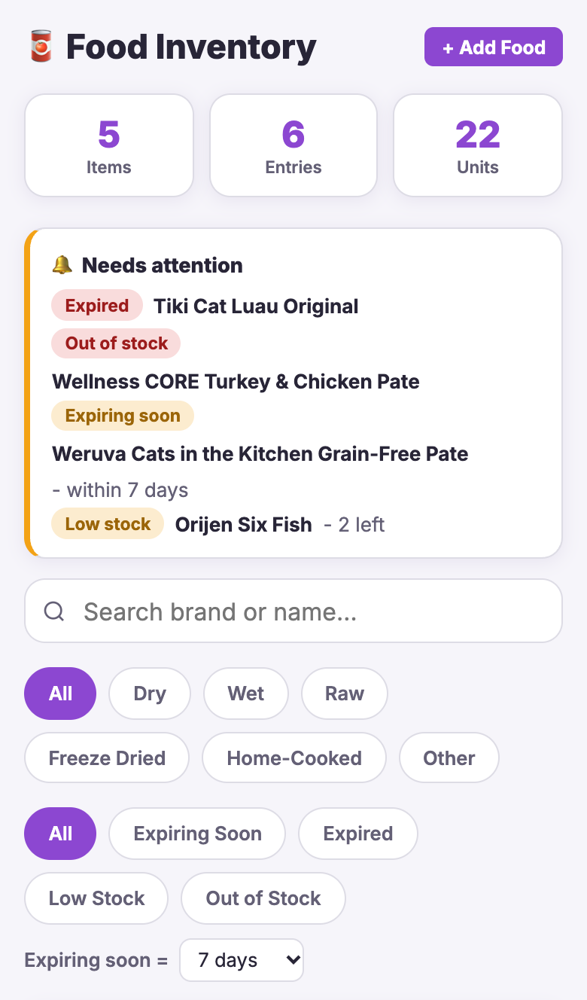
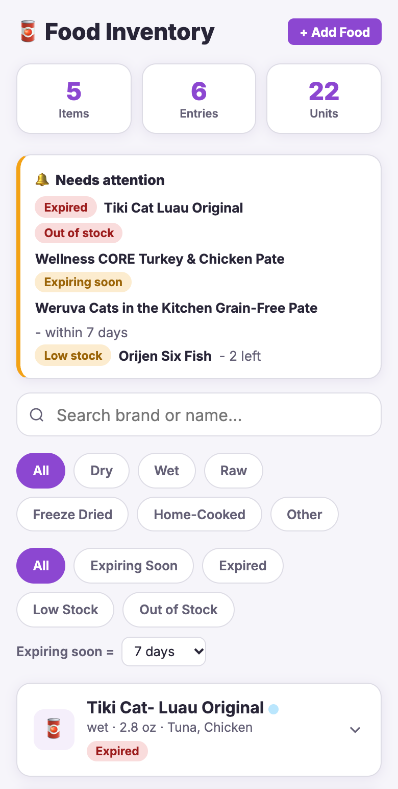
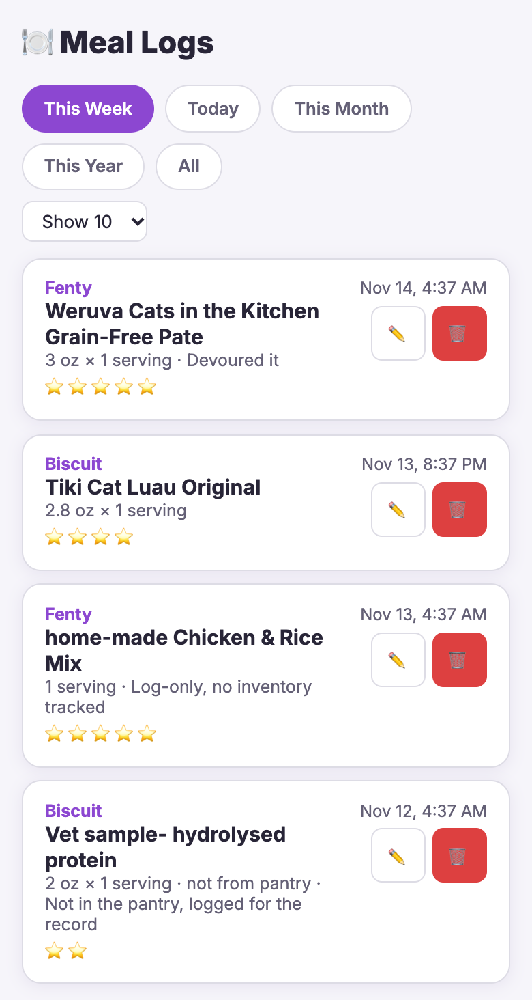
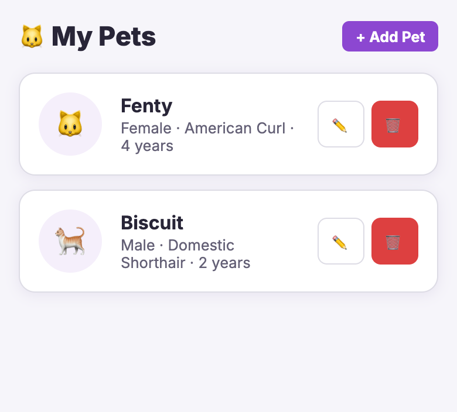
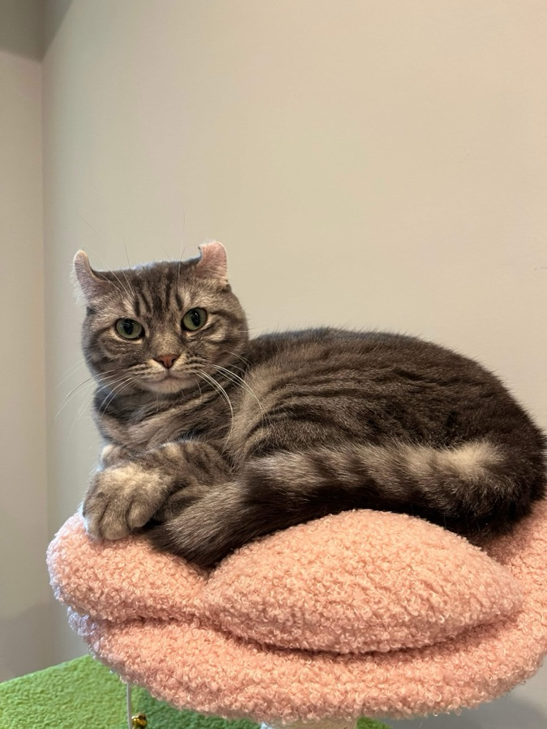

Your cat’s pantry, finally organized.
Never scramble during a sale again. Pet Pantry helps you track your cat’s food inventory, log every meal, and always know exactly what’s in stock- all in one adorable app.

Everything your cat’s pantry needs
From tracking what’s expiring to logging every meal- Pet Pantry has you covered.
Know exactly what you have, grouped by expiration date. Color-coded alerts tell you what’s expiring soon so nothing goes to waste.
Log every meal with one tap. Inventory auto-deducts when you feed your cat- or skip tracking entirely and just log meals for fun.
Have more than one cat? No problem. Create profiles for all your pets and track each one’s meals and food preferences separately.
Let your cat rate their meals! Log a 1-5 star rating so you always remember which foods were a hit and which were a flop.
three screens, in the order you fill them
No apps to download and no subscription. It opens in the browser, or sits on your home screen.

the pantry
Start here. Add what is already in the pantry: brand, type, size, proteins, a date and a count.

the meals
Then log a meal: one cat, one food, one tap. The can comes off the count by itself.

the cats
A profile each, added whenever you like. Two cats on different food stay apart in the log.

inspired by one cat in particular
Fenty eats four brands, rates every one of them, and is the reason anybody counted the cans.
- breed
- American Curl
- age
- 6 yr 1 mo
- eats
- wet and dry
- rates
- 0/5 for anything chicken, 5/5 for shrimp
what it costs, and what it keeps
| what | the answer |
|---|---|
| price | Free. No subscription, no tiers, nothing to cancel. |
| account | An email and a password. The demo needs neither. |
| on a phone | Add it to the home screen and it opens like an app. |
| offline | The app shell is cached, so it opens without a signal. |
| your data | Yours. Every row is scoped to your account in the database. |
before you add the first can
can i look around first?
Open the demo: a pantry already in it, nothing saved to an account, reset it whenever you like.
what if i don’t count cans?
Leave the quantity empty. Meals still get logged and rated, and nothing is deducted.
more than one cat?
Each pet gets a profile, and every meal is logged against one of them.
does it work on my phone?
That is what it was built for: a phone layout first, with a sidebar on wider screens.
start with what’s in the pantry
Add the cans you already have, and the next time there is a sale on you will know whether you need it.